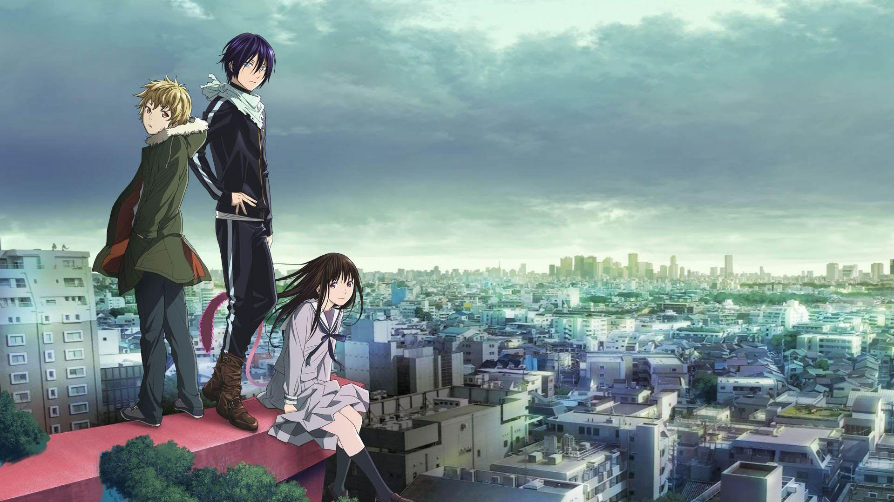

Kaiju No. 8
Kaiju No. 8 is an exhilarating anime following Kafka Hibino, a man who transforms into a Kaiju after years of cleaning up after monster battles. Now he must fight to keep his dual identity hidden while protecting humanity, delivering an exciting story packed with intense action, deep emotional connections, and stunning visuals.
Noragami
Noragami tells the compelling tale of Yato, a minor god without a shrine, who dreams of becoming famous. Alongside Hiyori and Yukine, he navigates battles, divine politics, and his haunting past. This anime beautifully intertwines humor, action, and heartfelt moments with divine lore.
Grand Blue
Grand Blue offers a hilarious slice-of-life experience centered on college student Iori Kitahara. As he navigates friendships and eccentric diving club members, the anime delivers endless laughter, stunning ocean views, and heartfelt camaraderie.
Dandadan
Dandadan is a quirky, supernatural comedy following Momo and Okarun as they encounter bizarre aliens and spirits. This series excels in its blend of over-the-top action, touching character dynamics, and surreal humor.
Scissor Seven

Scissor Seven combines humor, stunning animation, and action-packed storytelling to follow Seven, a scissor-wielding amnesiac barber turned amateur assassin. Its unique style and heartfelt moments make it a standout show.
If you want to download any of these anime, visit the website below:
Gogoanime